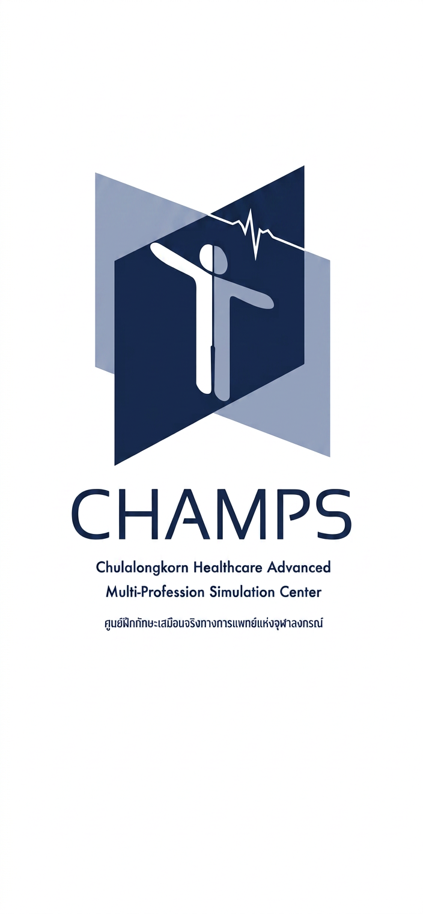

AHA Guideline 2025 — Basic Life Support (3D Scenario)
สำรวจรอบตัวผู้ป่วยในฉาก 3D และแตะ/ลากสิ่งกีดขวางอันตรายออกก่อนเข้าไปช่วยเหลือ
แตะที่ไหล่ผู้ป่วยในฉาก 3D พร้อมพูดปลุกเรียกเสียงดังว่า "คุณ คุณ!"
ผู้ป่วยไม่รู้สึกตัวและไม่หายใจ! พูดขอความช่วยเหลือให้ครบทั้ง 3 คำสำคัญ:
👆 ขั้นตอนที่ 1/5 (Click): แตะ/คลิกที่ "ปุ่มเปิดเครื่องสีเขียว" บนโมเดล 3D AED